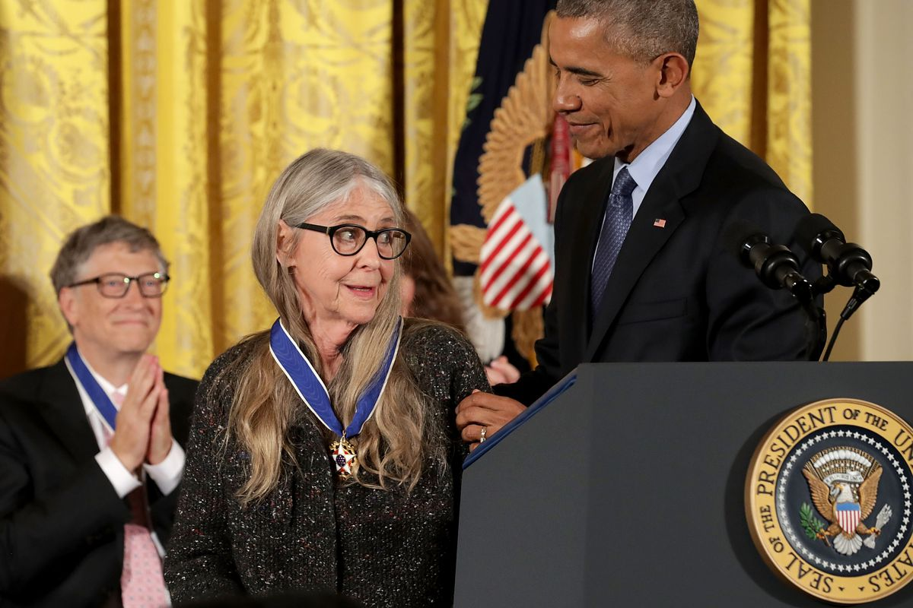

Margaret Heafield Hamilton (born August 17, 1936) is an American computer scientist, systems engineer, and business owner. She was director of the Software Engineering Division of the MIT Instrumentation Laboratory, which developed on-board flight software for NASA's Apollo program. She later founded two software companies—Higher Order Software in 1976 and Hamilton Technologies in 1986, both in Cambridge, Massachusetts.
Hamilton has published more than 130 papers, proceedings, and reports, about sixty projects, and six major programs. She is one of the people credited with coining the term "software engineering".
On November 22, 2016, Hamilton received the Presidential Medal of Freedom from president Barack Obama for her work leading to the development of on-board flight software for NASA's Apollo Moon missions.
As the lead programmer for the Apollo Program's Guidance Computer, though, Hamilton knew that she and her team had planned for this and they had written code to handle this exact kind of problem.
"It quickly became clear that the software was not only informing everyone that there was a hardware-related problem, but that the software was compensating for it," Hamilton said on the 40th anniversary of the Apollo 11 landing. "With only minutes to spare, the decision was made to go for the landing."
Even though Hamilton was just 32 years old at the time, NASA's mission control staff trusted her software, too. They gave Armstrong and Aldrin the go-ahead to land on the moon, and Hamilton's error-correcting code saw to it that they were successful.